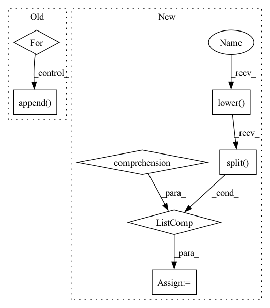

Pattern ID :30579
Before Change
def generate(self, batch_data, eval_dataloader):
generate_corpus = []
source_text = batch_data["source_text"]
for text in source_text:
sentence = " ".join(text)
encoding_dict = self.tokenizer(sentence, return_tensors="pt")
input_ids = encoding_dict["input_ids"].to(self.device)
sample_outputs = self.decoder.generate(
input_ids, num_beams=5, max_length=self.max_target_length, early_stopping=True
)
generated_text = self.tokenizer.decode(sample_outputs[0], skip_special_tokens=True)
generate_corpus.append( generated_text.lower().split())
return generate_corpus
def forward(self, corpus, epoch_idx=-1):
source_text = corpus["source_text"]After Change
input_ids, attention_mask=attn_masks, num_beams=5, max_length=self.max_target_length, early_stopping=True
)
generated_text = self.tokenizer.batch_decode(sample_outputs, skip_special_tokens=True)
generate_corpus = [text.lower().split() for text in generated_text]
return generate_corpus
def tokenize_text(self, text):
texts = [" ".join(t) for t in text]In pattern: SUPERPATTERN
Frequency: 3
Non-data size: 7
Instances Fragment ID: 90398067
Project Name: rucaibox/textbox
Commit Name: 47a1a3dc1eee71dd585124dbf1786e2508d34561
Time: 2021-04-15
Author: 1020139164@qq.com
File Name: textbox/model/Seq2Seq/bart.py
M Class Name: BART
N Class Name: BART
M Method Name: generate(3)
N Method Name: generate(3)
M Parent Class: Seq2SeqGenerator
N Parent Class: Seq2SeqGenerator
M File Name: textbox/model/Seq2Seq/bart.py
N File Name: textbox/model/Seq2Seq/bart.py
M Start Line: 43
M End Line: 54
N Start Line: 41
N End Line: 48
Before Change
def generate(self, eval_dataloader):
generate_corpus = []
for batch_data in eval_dataloader:
source_text = batch_data["source_text"]
for text in source_text:
sequence = "translate German to English: " + " ".join(text)
inputs = self.tokenizer(sequence, return_tensors="pt").to(self.device)
encoded_sequence = inputs["input_ids"].to(self.device)
sample_outputs = self.decoder.generate(
encoded_sequence, max_length=self.max_target_length,early_stopping=True
)
decoded_sequence = self.tokenizer.decode(sample_outputs[0], skip_special_tokens=True)
generate_corpus.append( decoded_sequence)
print(generate_corpus)
return generate_corpus
def calculate_ids(self, source_text):After Change
batch_encoded_sequence, max_length=self.max_target_length, early_stopping=True
)
batch_decoded_sequence = self.tokenizer.batch_decode(batch_outputs, skip_special_tokens=True)
batch_decoded_text = [text.lower().split() for text in batch_decoded_sequence]
generate_corpus.extend(batch_decoded_text)
// print(batch_decoded_text)
return generate_corpus
Fragment ID: 90398065
Project Name: rucaibox/textbox
Commit Name: abab0b9d31f046f2d58b980ee16b1157d3c367a5
Time: 2021-03-17
Author: zhuohaoyu1228@gmail.com
File Name: textbox/model/Seq2Seq/t5.py
M Class Name: T5
N Class Name: T5
M Method Name: generate(2)
N Method Name: generate(2)
M Parent Class: Seq2SeqGenerator
N Parent Class: Seq2SeqGenerator
M File Name: textbox/model/Seq2Seq/t5.py
N File Name: textbox/model/Seq2Seq/t5.py
M Start Line: 40
M End Line: 53
N Start Line: 39
N End Line: 54
Before Change
def generate(self, batch_data, eval_data):
generate_corpus = []
source_text = batch_data["source_text"]
for text in source_text:
text = " ".join(text)
encoding_dict = self.tokenizer(text, return_tensors="pt")
input_ids = encoding_dict["input_ids"].to(self.device)
output_ids = self.model.generate(input_ids, max_length=self.max_target_length, early_stopping=True)
generate_text = self.tokenizer.decode(output_ids[0], skip_special_tokens=True)
generate_corpus.append( generate_text.lower().split())
return generate_corpus
def forward(self, corpus, epoch_idx=-1):After Change
input_ids, attention_mask=attn_masks, num_beams=5, max_length=self.max_target_length, early_stopping=True
)
generated_text = self.tokenizer.batch_decode(sample_outputs, skip_special_tokens=True)
generate_corpus = [text.lower().split() for text in generated_text]
return generate_corpus
def tokenize_text(self, text):
input_ids = [] Fragment ID: 90398064
Project Name: rucaibox/textbox
Commit Name: 47a1a3dc1eee71dd585124dbf1786e2508d34561
Time: 2021-04-15
Author: 1020139164@qq.com
File Name: textbox/model/Seq2Seq/prophetnet.py
M Class Name: ProphetNet
N Class Name: ProphetNet
M Method Name: generate(3)
N Method Name: generate(3)
M Parent Class: Seq2SeqGenerator
N Parent Class: Seq2SeqGenerator
M File Name: textbox/model/Seq2Seq/prophetnet.py
N File Name: textbox/model/Seq2Seq/prophetnet.py
M Start Line: 38
M End Line: 50
N Start Line: 38
N End Line: 45